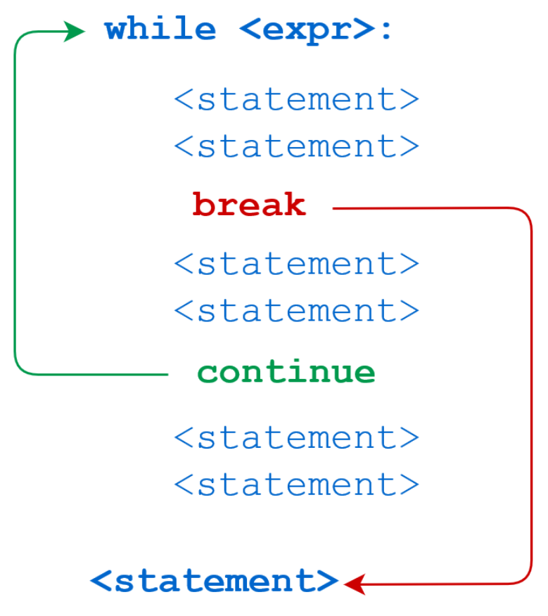
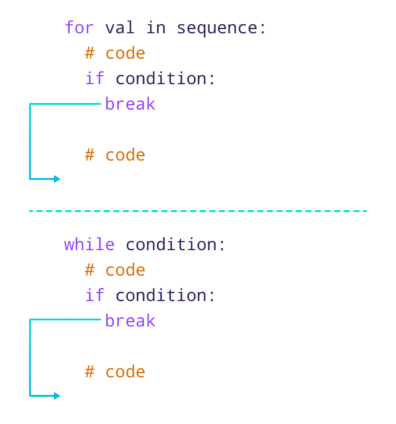
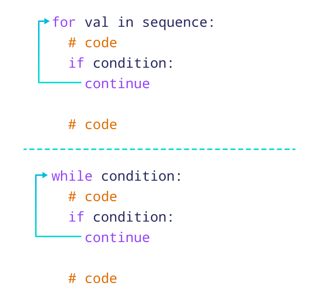

Albert EinsteinKhiem Nguyen
Lecturer in Multiscale Materials
khiem.nguyen@glasgow.ac.uk
Albert Einsteinnot |
unary logical negation |
and |
and |
or |
or |
is |
is the same object |
is not |
is not the same object |
+, -, *, /, % are well-known.= |
x = 3 |
x becomes equal to \(3\) |
+= |
x += 3 |
x = x + 3 |
-= |
x -= 3 |
x = x - 3 |
*= |
x *= 3 |
x = x * 3 |
/= |
x /= 3 |
x = x / 3 |
%= |
x %= 3 |
x = x % 3 |
//= |
x //=3 |
x = x // 3 |
**= |
x **=3 |
x = x ** 3 |
| some more |
Example 1
x = 2, y = 1, z = 27Example 2
9666928 9666928
9729224 9729224
x is y = False
x is not y = TrueA useful method of string: str.format(*args, **kwargs)
{}.Example 1
a = 3.14159, b = 2, c = 3
a = 3.14159, b = 1.30, c = 2.6Example 2: mostly useless for now – maybe useful later
left aligned
right aligned
centered
*******centered using ********Formatted string literals
fstr.format()format() protocolExample
a = 10, b = 20
a = 3.14159, b = 2.71828Sequential statments
Run step by step
Conditional statements
Run procedure #1 when one condition is True or run procedure #2 else when False
Loop statements
Repeat the procedure until the condition is or is not satisfied
break and continue
Enhance the use of the loop
if statementRemark (Remember please please please !!!)
: at the end of if statement, right after the conditionif conditionif-else statementInterpretation: If you can read English, you should understand this construction.
if-elif-else statementInterpretation: If you can read English, you should understand this construction.
😘 Two types of loops
indefinite loops/ sentinel loops
Loop runs until a condition is encountered and satisfied, which you don’t know in advance, either due to external inputs or complex calculations.
counter loops
You can be clear in advance how many iterations will occur.
😘 Two loop statements are
while loopfor loopwhile loopReminder: colon “:” and indentation using “tab”
while loop: Examplecounter, value = 0, 1 # multiple assignments
n = input("Value of index?")
if n.isnumeric():
n = int(n) # convert to integer if it is numeric
else:
n = 5 # otherwise, default n to 5
print("2^{0:^2} = {1}".format(counter, value))
while counter < n:
value *= 2
counter += 1
print("2^{0:^2} = {1}".format(counter, value))for loopReminder: colon “:” and indentation using “tab”
for loop: Examples2^0 = 1 2^1 = 2 2^2 = 4 2^3 = 8 2^4 = 16
2^5 = 32 2^6 = 64 2^7 = 128 2^8 = 256 2^9 = 512 I have 2 dogs & 3 cats
cats 3 & dogs 2 have I break and continue
break and continue statements are best demonstrated as in the left figure. They are literally interpreted as their English meanings.
break statement immediately terminates a loop entirely.
Program execution proceeds to the first statement following the loop body.
continue statement immediately terminates the current loop iteration.
Execution jumps to the top of the loop.
break and continuebreak statement
continue statement
break and continue: Examples1
3
5
7
9red
yellow
red; green; blue; yellow; black; black
red
red green blue yellow black black yellow blue green red ['cc', 'dd', ['eee', 'fff']]
['eee', 'fff']L1 + L2 = [1, 2, 3, 4, 5, 5, 4, 3, 2, 1]
L1 + L3 = [1, 2, 3, 4, 5, '5', '4', '3', '2', '1']L1 + L2 = [1, 2, 3, 4, 5, 5, 4, 3, 2, 1]
L1 + L3 = [1, 2, 3, 4, 5, '5', '4', '3', '2', '1']a1 + a2 = [6 6 6 6 6]stop position – it stops right before itstart is mising, it counts from 0 (beginning of the list)stop is missing, it steps until the end of the list (indexing -1)[1, 2, 3, 4]
[1, 3]
[0, 3]
[1, 4, 7]
[0, 3, 6, 9]List
[ ... ]Tuple
( ... )Tuple packing: We don’t use parentheses in the following definition:
t = 0, 1, 'two' # equivalent to t = (0, 1, 'two')
The values 0, 1, 'two' are packed together in a tuple
Sequence unpacking:
t1, t2, t3 = t # --> t1 == 0, t2 == 1, t3 == 'two'
Sequence unpacking requires: There are as many variables on the left side of equal sign as there are elements in the sequence on the right side.
Combining both tuple packing and sequence unpacking
Multiple asignment
a, b, c = 1, 2, 3
is a combination of tuple packing, and then sequence unpacking.
Syntax
dict (we must learn Classes and Objects to understand)tel = {'Iron Man': 4098, 'Hulk': 4139, 'Saitama': 5014, 'Mononoke': 6017}
tel['Iron Man'] = 4098
After deletion: tel = {'Iron Man': 4098, 'Saitama': 5014, 'Mononoke': 6017}
list_from_dict = ['Iron Man', 'Saitama', 'Mononoke']\[ v = \begin{bmatrix}1 & 2 \\ 3 & 4\end{bmatrix} \in \mathbb{R}^{2 \times 2} \]